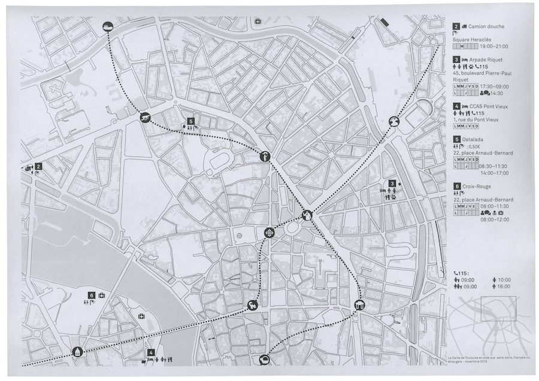
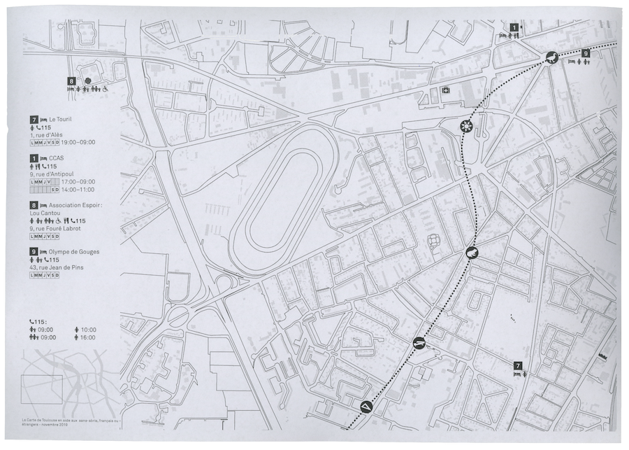
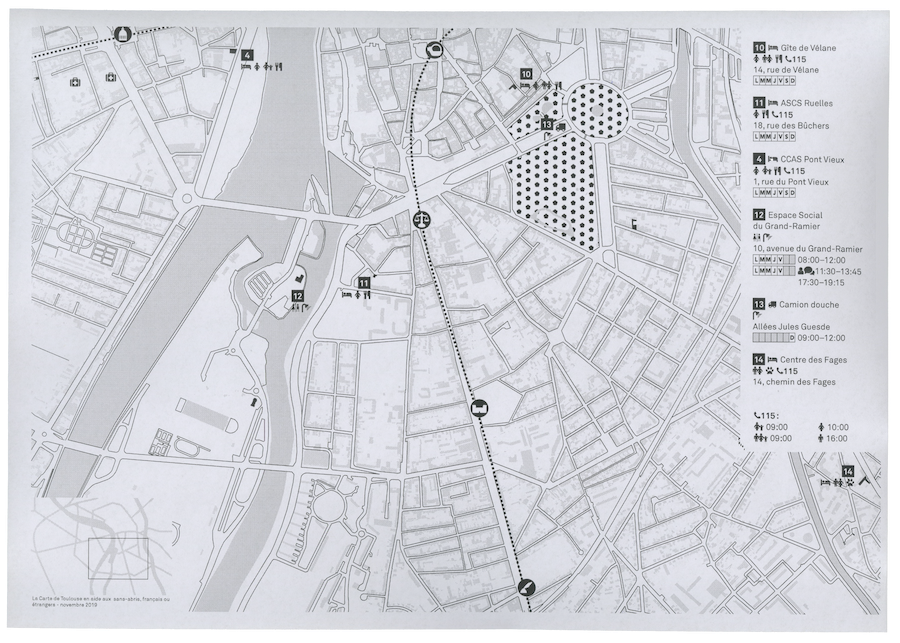
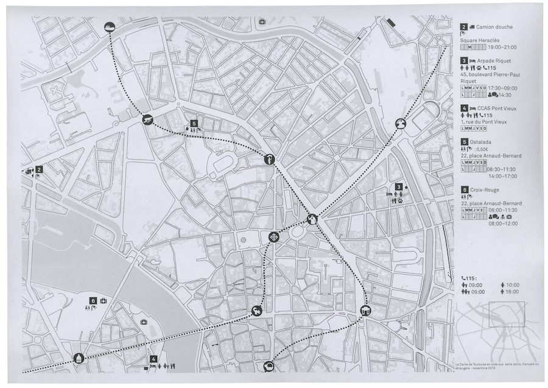
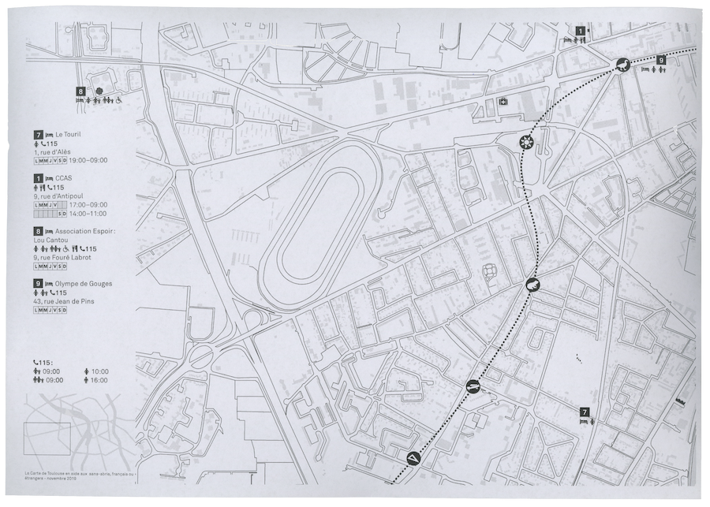
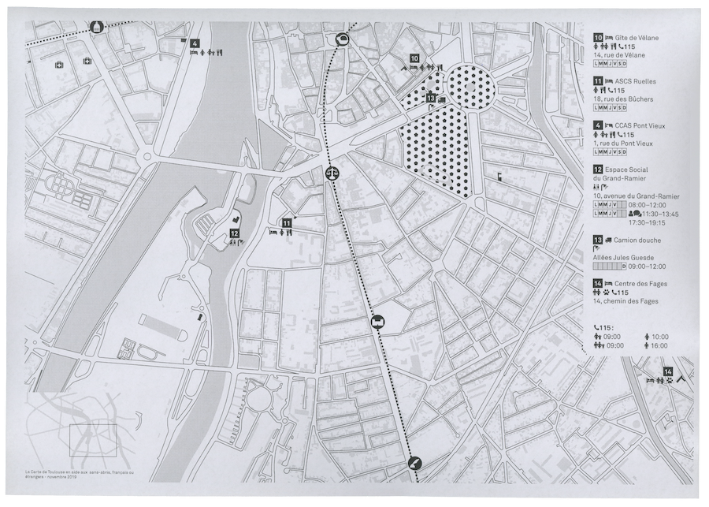
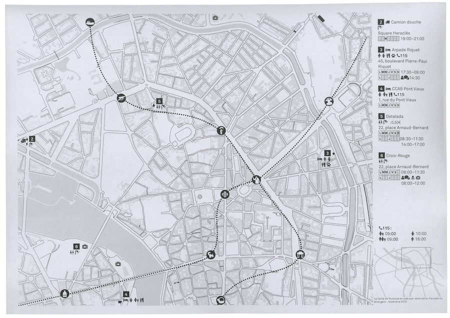
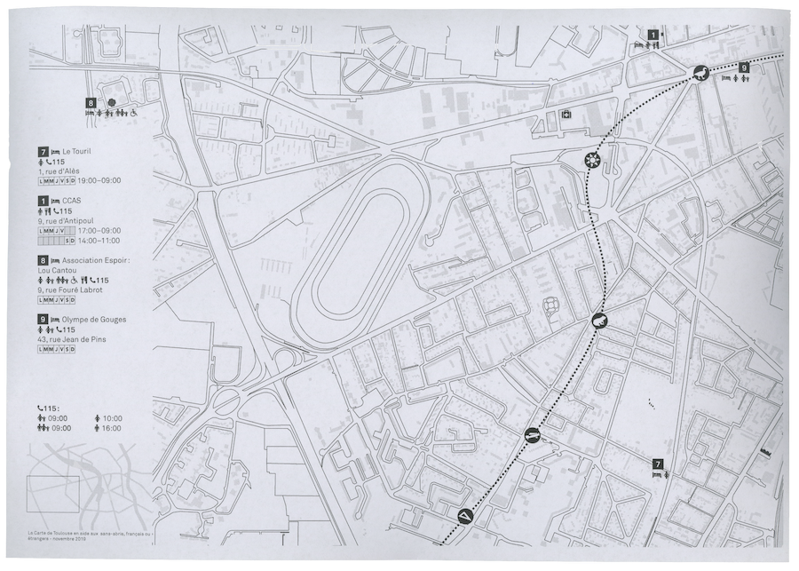
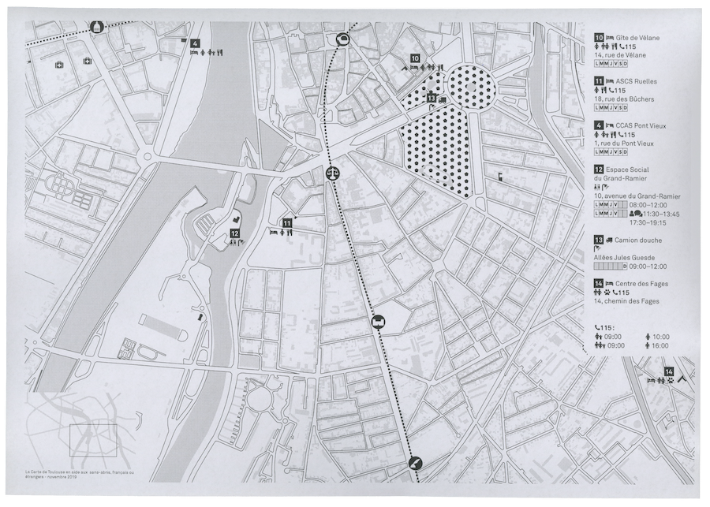

Première étape de rechercher cartographique autour d’une carte pour les sans-abris et migrants de Toulouse. Pour utiliser cette carte il n’y a pas besoin de savoir lire le français. L’utilisation des pictogrammes suffit pour comprendre quels sont les lieux représentés et leurs horaires. Carte à l’usage des étrangers ou des français sans domicile fixe francophone ou non.


